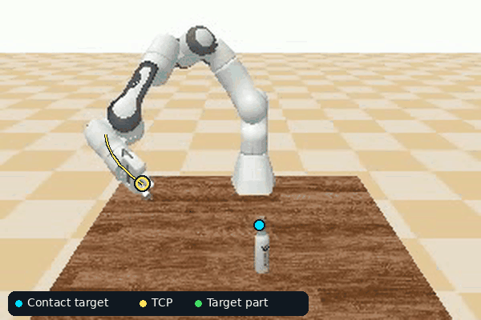

Part2Action
Part-guided robotic manipulation
- Enable robots to follow instructions about specific object parts, such as “grasp the bottle at its neck.”
- Explore how understanding where to interact with an object can guide robot manipulation.
- Aim to extend part-guided manipulation to human–robot interaction and assistance.
[ GitHub ]